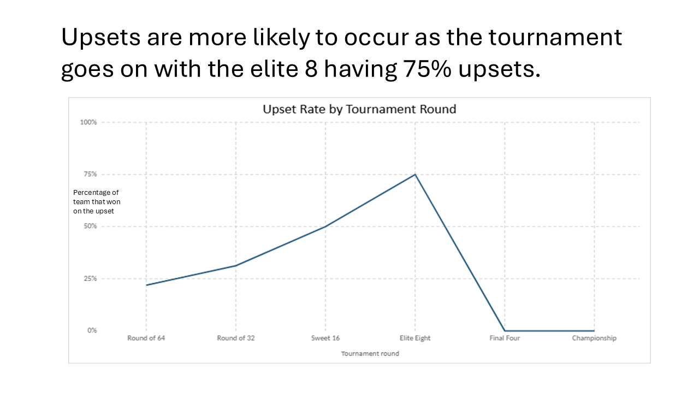
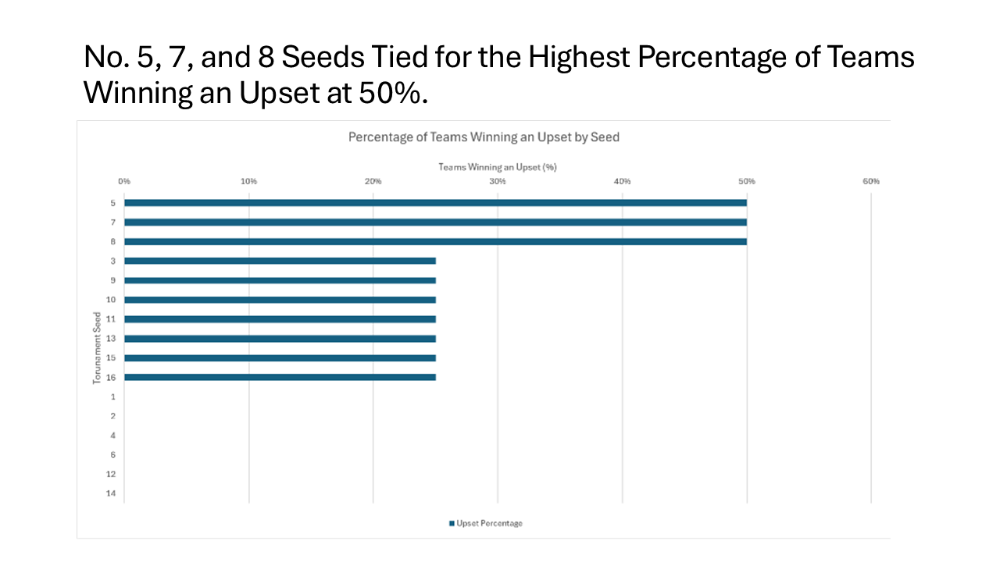
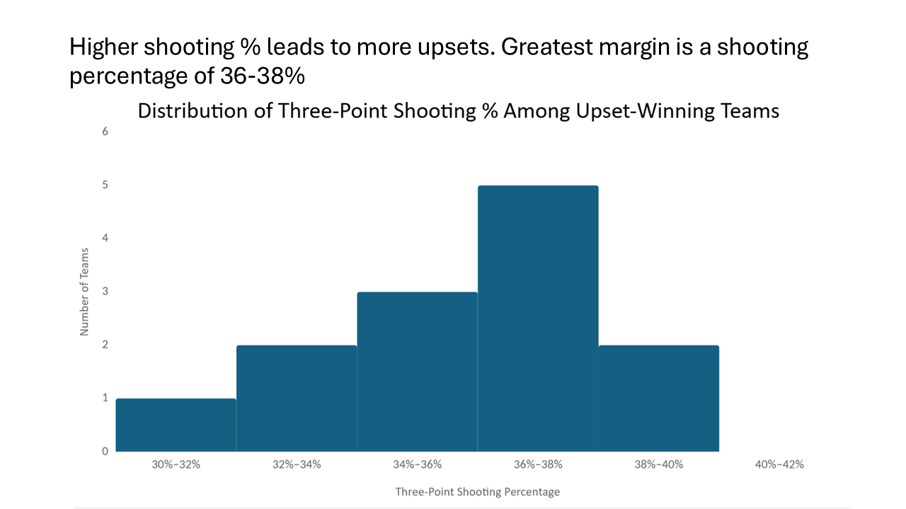
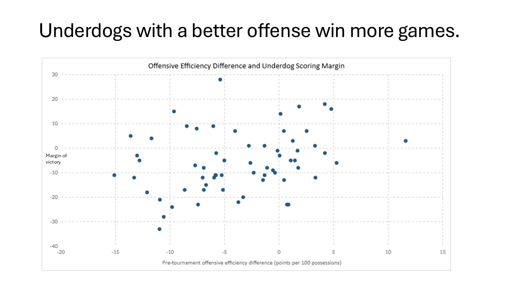

Group Members and e-Portfolios
Our team consisted of five members. Each member’s individual e-Portfolio can be accessed through the links below.
Project Overview
For our Data Visualization Team Project in Introduction to Industrial Engineering, our group analyzed data from the 2023 NCAA March Madness basketball tournament using Microsoft Excel. The goal of this project was to explore patterns in tournament upsets and communicate our findings through effective data visualizations.
Each group member developed a research question, analyzed the relevant data in Excel, and created an assertion-evidence slide to present their findings. Our four questions focused on how upset rates change throughout the tournament, which tournament seeds have the highest upset percentages, how three-point shooting relates to upsets, and how offensive efficiency relates to underdog performance. We combined our individual slides into one team presentation.
Through this project, we practiced organizing and analyzing data, selecting appropriate charts, and presenting results in a way that makes the information easier to understand.
Dataset Description
Our group used a dataset containing information about teams that participated in the 2023 NCAA March Madness basketball tournament. The dataset included each team’s name, conference, tournament seed, win-loss record, and several offensive and defensive performance statistics.
Some of the key variables included adjusted offensive efficiency, adjusted defensive efficiency, three-point shooting percentage, and tournament upset wins. The dataset also identified whether each team had won an upset during the tournament.
These variables allowed us to investigate relationships between team performance, tournament seeding, and upset victories. We used Microsoft Excel to organize and analyze the data and create charts that visually communicated our findings.
Question 1: How Does the Upset Rate Change by Tournament Round?
We wanted to see how the percentage of games ending in an upset changed as the 2023 March Madness tournament progressed. In Excel, we marked a game as an upset when the team with the larger seed number beat the team with the smaller seed number. We then grouped the games by date and divided the number of upsets on each date by the total number of games played that day.
We created a line graph with the game date on the horizontal axis and the upset percentage on the vertical axis. Using percentages let us compare days with different numbers of games. For example, March 25 had a 100% upset rate because both games played that day ended in upsets.

Question 2: Which Seeds Have the Highest Upset Percentage?
Why This Question Is Interesting
March Madness is known for its unpredictable outcomes, especially when lower-ranked teams defeat higher-ranked opponents. We wanted to determine which tournament seeds had the highest percentage of upset victories. This question is interesting because it helps us understand how tournament seeding relates to the likelihood of an upset.
How Excel Was Used to Answer the Question
We used Microsoft Excel to analyze the tournament data and determine which seeds had the highest percentage of upset victories. We created a PivotTable to organize the data by tournament seed and summarize the upset percentages for each seed. We then used the results to create a horizontal bar chart, allowing us to compare the percentages across different seeds.
Assertion-Evidence Slide
Our analysis showed that No. 5, 7, and 8 seeds tied for the highest percentage of teams winning an upset, each at 50%.

How the Slide Was Developed
We developed the assertion-evidence slide using the horizontal bar chart created from my Excel PivotTable analysis. The chart displays tournament seeds on the vertical axis and upset percentages on the horizontal axis. We organized the results to make the differences between seeds easy to identify. The slide’s main assertion highlights that No. 5, 7, and 8 seeds tied at 50%, while the chart provides visual evidence supporting this conclusion.
Question 3: How Does Three-Point Shooting Relate to Upsets?
We want to look at the distribution of three point percentage among teams that pulled off an upset during the 2023 march madness tournament. We used excel to find the teams that won and look at the 3 point % from each of them. Using that information we created a histogram chart to display the information we found, grouping teams into their respective areas. These bars represent how many teams won based off their percentage. This graph helps us look at how often teams with different 3 point percentages won. Overall, this helps us understand whether teams that pulled off upsets tended to have stronger three-point shooting percentages.

Question 4: How Does Offensive Efficiency Relate to Underdog Performance?
We wanted to see whether underdogs with a stronger offense relative to their opponent tended to finish with a better scoring margin. For each of the 63 games, we used Excel to subtract the favorite’s pre-tournament offensive efficiency from the underdog’s. We also subtracted the favorite’s final score from the underdog’s final score. We created an XY scatter plot with the efficiency difference on the horizontal axis and the scoring margin on the vertical axis. Each dot represents one game, and dots above zero show upsets. The points generally rise from left to right, but some underdogs won even though their offenses were rated lower going into the tournament..
